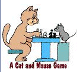
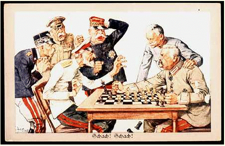

|  |  |
Tournament News & Notices:Date: Jan. 20, 2004To: Indiagonal Jones, King Michael, Malcolm, spocko, truckman, & bdk1 From: jestone Hey guys! Here is my proposal to you all for a friendly tournament of loop chess. But first, let me introduce you past IYT players to "bdk1". bdk1, a.k.a. "mike", is an old friend of mine from England who I met long ago, before I found IYT or brainking. He has agreed to join us. That way, we will have 7 players in our event, assuming you all agree to my plan described below. And also, "truckman" is a personal, "live" friend who I've known for many years here in my home. He's good too. Here's what I now have in mind:
Terry [ trottermath@gmail.com ]
Pairings are these:
#2 has white with #3, #5, & #7; black with the others. #3 has white with #4, #6, & #1; black with the others. #4 has white with #5, #7, & #2; black with the others. #5 has white with #6, #1, & #3; black with the others. #6 has white with #7, #2, & #4; black with the others. #7 has white with #1, #3, & #5; black with the others.
|
Last update: Feb 29, 12:00 p.m. (CST) |
||||||||||||||
| #1 | #2 | #3 | #4 | #5 | #6 | #7 | W | L | D | SCORE | ||||
| jestone | . | . | ||||||||||||
| truckman | . | . | ||||||||||||
| Indiagonal Jones |
. | |||||||||||||
| Malcolm | . | 1 | 1 | . | ||||||||||
| King Michael | . | . | ||||||||||||
| spocko | . | . | ||||||||||||
| bdk1 | 0 | . | . | |||||||||||
Player information
Here I will present some information about the persons in our tournament, so that we can get to know the "real person behind the userid". (If you wish to share your own personal facts, just let me know. Nothing will be shown here without your permission.) I will begin with myself.
SpockoSpocko sent the following email to me:
Hi my name is Rick Valdron. I am 42 and by my userid you can tell that I am a trekkie. Spocko came from an episode in the original series. I like science-fiction and science-fantasy a lot, along with war games and strategy games. I have worked in industial roofing for the last 19 years. I live in London, Ontario, Canada. I am divorced and have 12 and almost 13 year old daughter and 16 year old step-son. I am a hardy Canadien. My daughter and I are clan of the wolf. hope to get pic to you soon
truckman"truckman" is Pablo Ayala, aged 32 or so. I've known him for many years, virtually as a member of my family. I've played a lot of chess with him, as has my son. Believe me, he's a worthy opponent, & I'm glad he can join us.
malcolm, aka Black KnightHere's the story:
Hello, my name is Malcolm and I am 52. I have worked as a Senior Biomedical Scientist in Laboratory Medicine at a very busy hospital in the centre of UK for about 33 years. I have a lovely wife and three children.
King MichaelMichael is Malcolm's older brother. You can learn more about this remarkable individual by visiting his website HERE.
Indiagonal Jones, aka Martin L.Hi! My name is Martin Landry ("Peter Pawn" on IYT or "Indiagonal Jones" on "Brainking.com" or many others). I'm 44 years old and have 3 children, 2 girls, 1 little boy separated. I've studied Ancient History, Anthropology and Archeology at the University of Montreal some many years ago, so what attracts me for the game of chess, is not only the game itself but all the "stuff" around and the history of it for sure I live in Quebec, Canada, so my natural language is French by the way. bdk1bdk1's first name is Mike. He lives in Liverpool, United Kingdom. He's 30 years of age. |
| Comments? Send e-mail. | Back to top | Go back to Home Page | Go back to Contents |